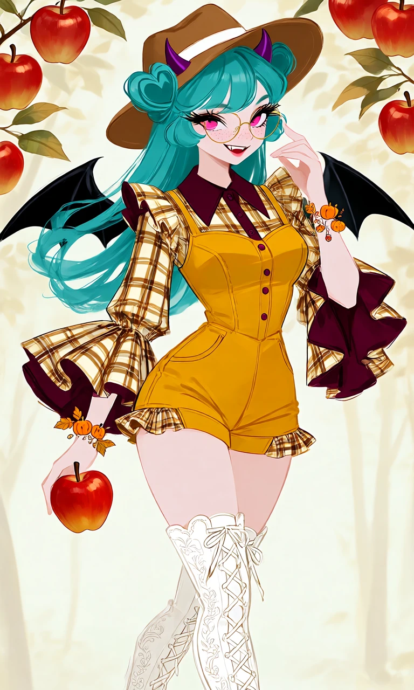
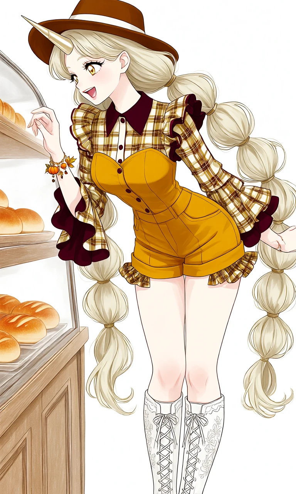

Sweet & Spiced: Golden Hour

Outfit Prompt
A charming, feminine autumn-inspired outfit featuring a fitted golden-yellow one-piece short jumpsuit worn over a separate cream, golden-brown, and burgundy plaid blouse.
The golden-yellow short jumpsuit is a single continuous piece of clothing, combining a fitted sleeveless upper body with very short tailored shorts. The fabric follows the natural curves of the bust, narrows gently at the waist, and flows smoothly over the hips into the short pant legs. The upper and lower sections are seamlessly connected, creating a smooth, uninterrupted silhouette.
The upper section features a gently curved sweetheart neckline and a vertical row of small round burgundy buttons running down the center front. Subtle vertical stitching provides a flattering fitted shape without creating a separate upper garment. The waist is naturally fitted, with no decorative overlapping fabric or pointed edges.
The lower section features very short golden-yellow shorts ending at the upper thighs, with softly rounded hips, subtle side pockets, and wide neatly rolled cuffs. Small golden-brown and cream plaid ruffles peek out beneath the shorts, creating a playful decorative trim.
Underneath the jumpsuit is a separate fitted cream, golden-brown, and burgundy plaid blouse with a deep burgundy pointed collar and small matching buttons at the neckline. The blouse features softly puffed shoulders and dramatic three-quarter-length sleeves ending in layered, flared bell-shaped ruffles. Deep burgundy fabric lines the inner ruffles, contrasting with the warm plaid outer layers.
A wide-brimmed warm brown felt hat features a rounded crown, gently curved brim, and a simple white ribbon hatband.
A delicate gold charm bracelet features miniature orange pumpkins, golden autumn leaves, and tiny dangling seasonal ornaments.
Elegant white knee-high lace-up boots feature rounded toes, delicate floral embroidery, long white crisscross laces, scalloped decorative accents, and sturdy medium-height block heels.
The complete outfit combines a smoothly fitted golden-yellow one-piece short jumpsuit, playful plaid sleeves, very short rolled shorts, a classic brown hat, and feminine white lace-up boots. The jumpsuit has a continuous, tailored silhouette from neckline to shorts, with a naturally defined waist and no separate upper layer.
Outfit Examples



